schlau.app ist eine Mathe-App, die dir hilft, Mathe zu lernen und zu verstehen. Du kannst die Schlau-App alleine, zu zweit oder in einer kleinen Gruppe verwenden.
Für schlau.app brauchst du keine Anleitung. Fang an und es klappt sofort. Damit noch besser, richtig cool klappt, lies jetzt diese Seite. Hier bekommst du Infos, um noch schneller und einfacher zu lernen. Und Zeit sparen kann ja nicht schaden, oder?
Die App schlau.app ist eine "Web App". Du musst sie also nicht bei Google Play oder App runterladen. Du rufst die App einfach wie eine Webseite auf (was du schon getan hast, wenn du das hier am Handy liest).
Der Stoff, den du lernen und üben kannst, ist für die Klassen 7 bis 10. Es ist aber einiges zum Wiederholen für frühere Jahrgänge dabei. Zum Beispiel kannst du mit schlau.app auch das Kleine Einmaleins üben. Und zwar gibt es Trainingseinheiten für echte Anfänger in der Grundschule, aber auch Mathefragen für Einmaleins-Nachlerner der Mittelstufe. Egal, ein hier sind Tipps und Regeln, die du brauchst, wenn du deine Zeit nicht verschwenden willst und echte Ergebnisse rausholen willst. Und hier sind erstmal nur 2 Tipps, aber wie allerwichtigsten:
Du siehst schon, wenn bis hierher gelesen hast: mit schlau.app musst du aktiv sein und dein Lernen im Griff haben.
Der letzte Tipp ist besonders wichtig: du schickst nämlich deinem Gehirn eine Botschaft! "Gehirn, bleib dran mit der Mathe. Nicht abschalten, wenn die Schule vorbei ist!" 😉
Warum ist das gut, Was ist der Trick dabei? Du kannst nicht Mathe lernen, wenn Mathe in deinem Leben überhaupt nicht vorkommt. Du kannst ja auch keine Sprache lernen, wenn du nicht sprichst. Mathe muss einen Bezug zum Leben haben. Dabei möchte dir schlau.app helfen.
Deshalb gibt es außer dem Trainieren von Grundlagen auch Matheaufgaben aus verschiedenen Bereichen, so wie du sie ja auch in Klassenarbeiten und in Prüfungen finden wirst. Außerdem versucht schlau.app, dir nebenbei praktisches Wissen oder Themen zum Mitreden zu vermitteln - wie z.B. Städte- und Länderinfos.
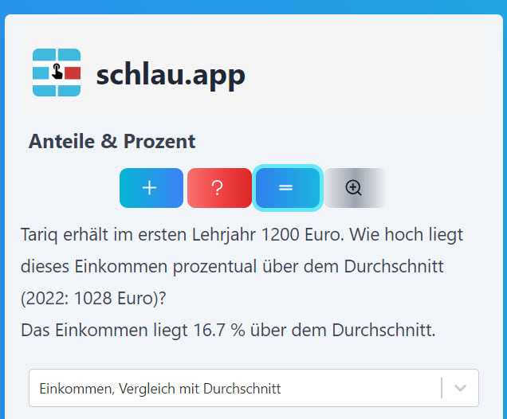
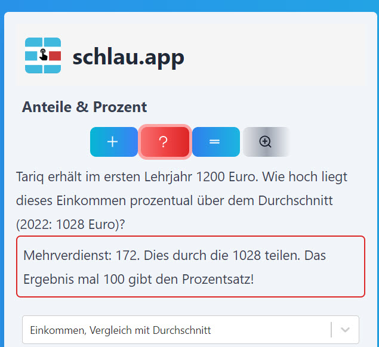
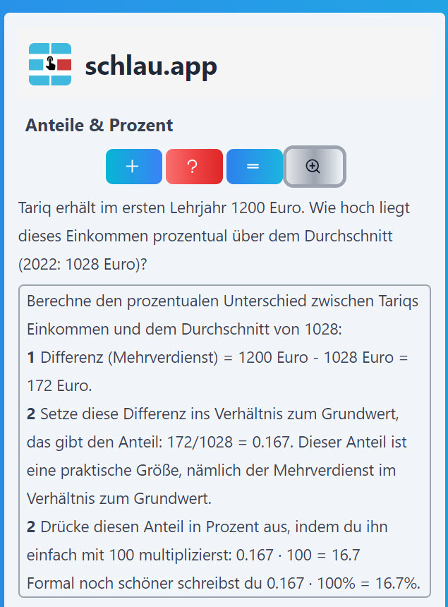
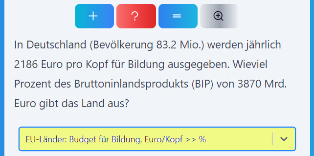
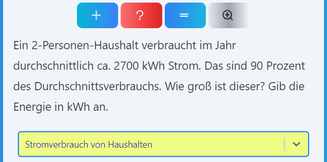
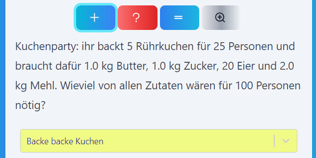
Die innovative Mathe-App schlau.app wird bietet für die Jahrgänge 7 - 10 schon einen großen Teil der Mathegrundlagen für die Berufsbildungsreife und den mittlere Schulabschluss wie z.B.:
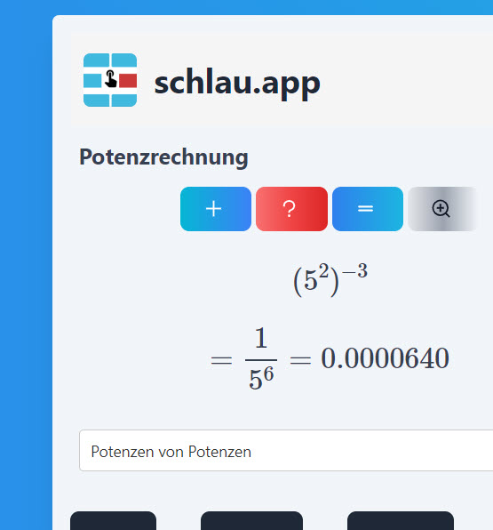
Sprachausgabe
übersetzen
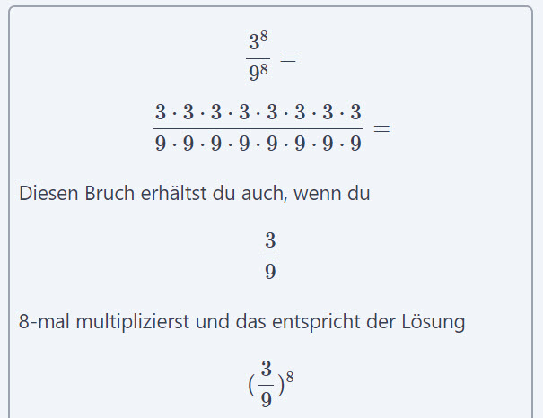
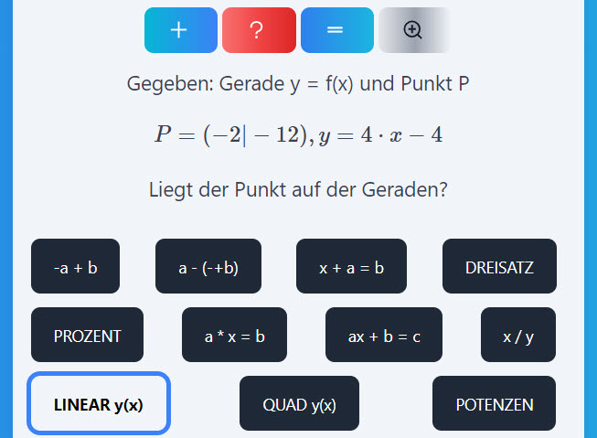
schlau.app ist eine coole Möglichkeit, per Handy Mathe zu lernen und zu verstehen. Die responsive Web-App ist einfach zu bedienen und bietet eine Vielzahl von Matheübungen und Aufgaben in der Mittelstufe. schlau.app ist die perfekt für Schüler, die ihre mathematischen Fähigkeiten verbessern wollen. Sie hilft außerdem, mathematisches Wissen in der realen Welt im Alltag zu verwenden. Sie macht dir Mut, deine Mathe-Skills souverän einzusetzen - und in vielen Situationan selbstbewusster mitzureden.
Probiere schlau.app noch heute aus und merke selbst nach wenigen Trainingseinheiten, wie es dir leichter fällt, Mathe zu machen. schlau.app wurde noch in der Testphase im Unterricht eingesetzt und ermöglichte konzentrierte und fruchtbare Mathestunden, selbst am Schuljahresende, als alle Prüfungen schon gelaufen waren. Das zeigt, dass Schülerinnen und Schüler mit der App gut zurechtkommen und Interesse haben, sich diese neue Art, Mathe zu üben, anzueignen.
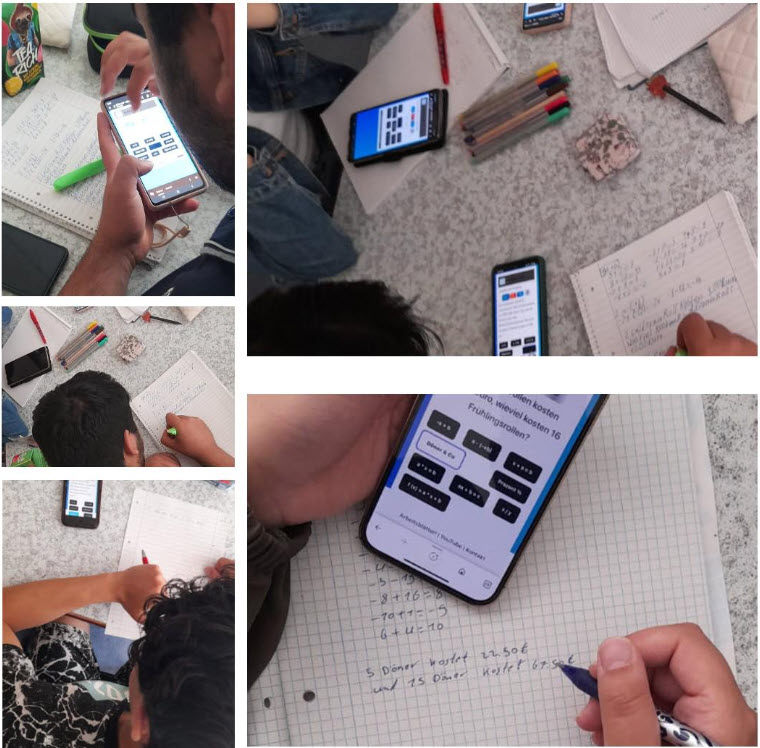
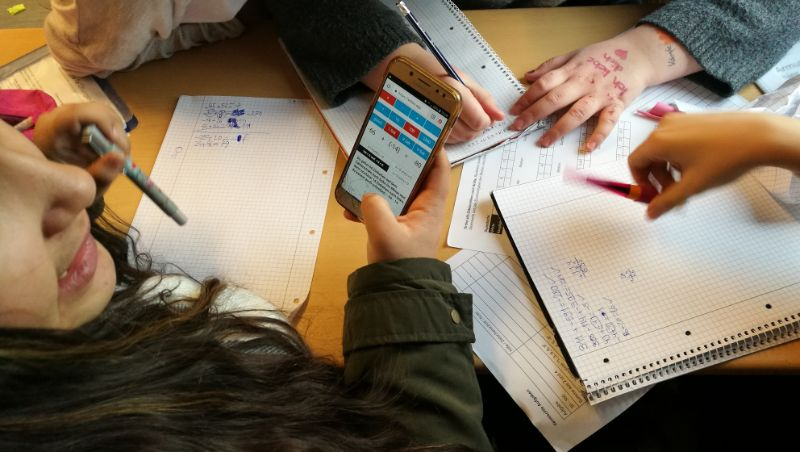
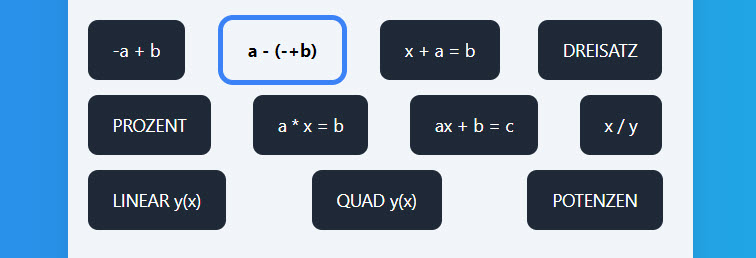
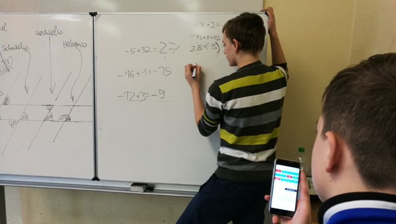
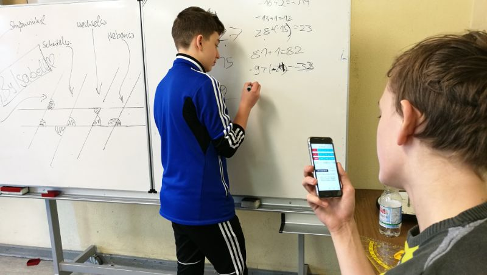
Mobile Apps, maßgescheidert für die eigenen Schüler, setzt Mathelehrer Dr. Eckard Ritter schon seit 2018 ein. Seit und letztlich durch Corona wird dieser Einsatz durch die an vielen Schulen verbesserte IT-Infrastruktur gefördert und erleichert: das mobile Teilen von Inhalten geht Hand in Hand mit dem Arbeiten am eigenen Telefon.
Das ist ein wichtiges Feature im viel erwähnten digitalen Unterricht, denn Schüler*innen der meisten Sekundarschulen haben auf jeden Fall ein Handy, aber nicht unbedingt einen PC. Mit schlau.app - und der Vorgängerapp MathByDoing.app - können jetzt einfach alle digital Mathe machen.
Auch das Format als Progressive Web-App begünstigt den niederschwelligen Einsatz: bei Schul-Laptops lässt sich oft nicht jedes Programm installieren - mit einer Web-App ist das kein Problem. Und schließlich: selbst wenn das Schul-Internet mal stockt, läuft schlau.app problemlos weiter. PWAs können, einmal geladen, auch ohne Internet arbeiten!